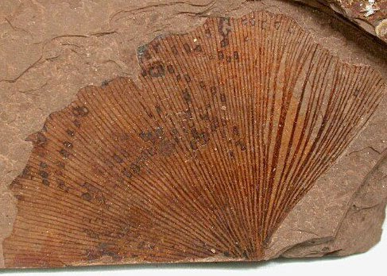

What are fossils?
Fossils are preserved remains or traces of ancient organisms found in sedimentary rocks. They provide vital evidence about the history of life on Earth and are used in various ways:
- Paleontology: Studying extinct organisms and their evolution.
- Geology: Dating and correlating rock layers to understand geological history.
- Environmental Reconstruction: Inferring past climates and ecosystems.
- Biostratigraphy: Identifying and dating sedimentary rock layers, important for oil exploration.
- Education: Engaging the public in science and natural history.
Overall, fossils are essential for understanding Earth's biological and geological past.
Can fossils get destroyed? If yes, how?

Fossils can be destroyed or polluted by:
- Environmental Factors: Erosion, weathering, and natural disasters.
- Chemical Pollution: Pollutants like acids or heavy metals altering fossil integrity.
- Human Activity: Construction and mining disturbing fossil sites.
- Improper Collecting: Poor excavation techniques damaging fossils.
- Microbial Activity: Bacteria and fungi breaking down organic material.
Protecting fossils requires awareness of these threats.
How to conserve fossils?
Conserving fossils involves careful techniques:
- Excavation: Use proper tools to excavate without damage and document context.
- Cleaning: Gently clean with soft brushes or water, avoiding harsh chemicals.
- Stabilization: Use appropriate consolidants for fragile fossils.
- Environmental Control: Store in stable, regulated environments to prevent deterioration.
- Storage: Use acid-free materials and ensure proper support.
- Handling: Wear gloves to protect from skin oils.
- Documentation: Keep detailed records of locations and conservation efforts.
- Education: Raise awareness about protecting fossil sites.
These practices help preserve fossils for future study.